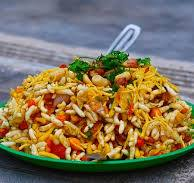

BHEL

Bhel Puri is a very popular Mumbai street food snack made with puffed rice, puri, boiled potatoes, onions, various chutneys, herbs, ground spices and sev (fried gram flour vermicelli). This dish is easy to make at home. It is a tasty snack having a lot of flavors and textures – sour, tangy, crispy, sweet, salty, crunchy. This bhel recipe comes together in under 45 minutes.
INGREDIENTS-
- ½ box of Rice Krispie cereal
- ¼ teaspoons turmeric powder
- tablespoon of salt
- Pinch of red chili powder
- ¼ cup roasted peanuts
- 1 tomato, diced
- ¼ boiled potato, diced
- ½ red onion, diced
- 3 tablespoons tamarind chutney
- 2 tablespoons coriander chutney
- Sev for garnish
- Chopped cilantro for garnish
BHEL RECIPE
- Heat two tablespoons of oil in a large pan over medium heat.
- Add turmeric, salt and red chili powder to the oil when the pan is warm, and turn off the heat.
- Add the Rice Krispies to the pan and mix thoroughly until they are evenly coated.
- Add Rice Krispies to a large mixing bowl.
- Add the potatoes, tomatoes, onions, peanuts and the chutneys to the mixing bowl with the Rice Krispies, and mix thoroughly.
- Sprinkle sev and cilantro onto the mixture, and serve.